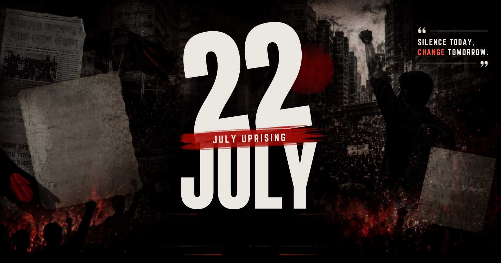

ISTIACK'S JULY CORNER
Read in Bangla
Read in Bangla

Share Link
Download / Print
Select Print Option
English Only
Bangla Only (শুধুমাত্র বাংলা)
Both Languages (উভয় ভাষা)
Cancel / বাতিল
Link copied!
 ISTIACK'S JULY CORNER
ISTIACK'S JULY CORNER
ISTIACK'S JULY CORNER
ISTIACK'S JULY CORNER